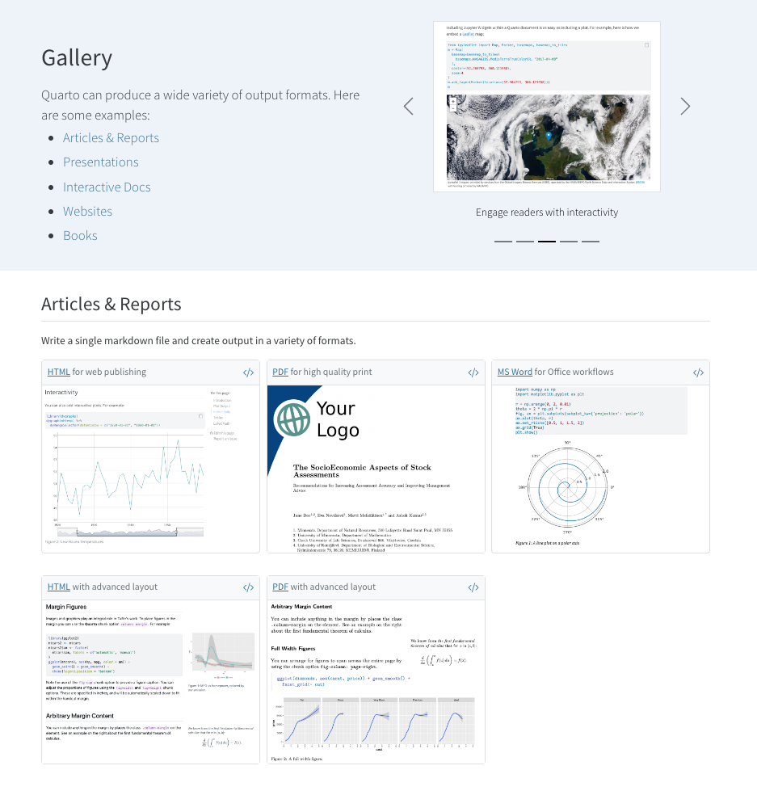

Usage: quarto
Version: 1.3.197
Description:
Quarto CLI
Options:
-h, --help - Show this help.
-V, --version - Show the version number for this program.
Commands:
render [input] [args...] - Render files or projects to various document types.
preview [file] [args...] - Render and preview a document or website project.
serve [input] - Serve a Shiny interactive document.
create [type] [commands...] - Create a Quarto project or extension
create-project [dir] - Create a project for rendering multiple documents
convert <input> - Convert documents to alternate representations.
pandoc [args...] - Run the version of Pandoc embedded within Quarto.
run [script] [args...] - Run a TypeScript, R, Python, or Lua script.
add <extension> - Add an extension to this folder or project
install [target...] - Installs an extension or global dependency.
publish [provider] [path] - Publish a document or project. Available providers include:
check [target] - Verify correct functioning of Quarto installation.
help [command] - Show this help or the help of a sub-command. Quarto for literate programming

Quarto for literate programming


Quarto - Visual Editor

| Format | Insert | Table |
|---|---|---|
 |
 |
 |
Render with Parameters
```{r}
#| label: setup
#| include: false
library(tidyverse)
library(palmerpenguins)
penguin_filter <- penguins |>
filter(species == params$species,
!is.na(body_mass_g))
diff_rows <- nrow(penguins) - nrow(penguin_filter)
```
PDF Articles
See more on Journal Articles at https://github.com/quarto-journals/

More PDF + LaTeX templates
Great work from the NFMS Open Science team on “Quarto titlepages”: https://nmfs-opensci.github.io/quarto_titlepages/
The tex templates were written by Eli Holmes and the lua filter along with changes to the Pandoc templates to allow themes was written by Mickaël Canouil. . . .

Quarto Gallery
Quarto can produce a wide variety of output formats.
Here are some examples:
